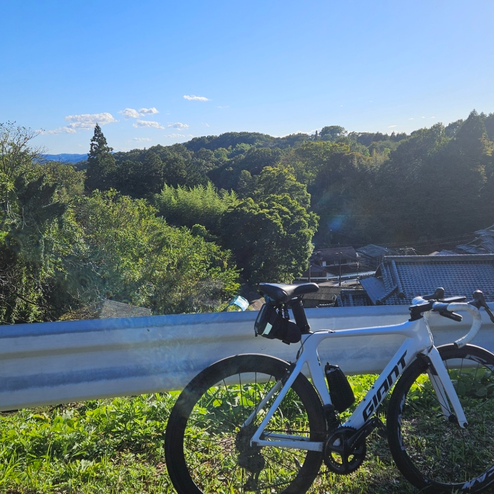
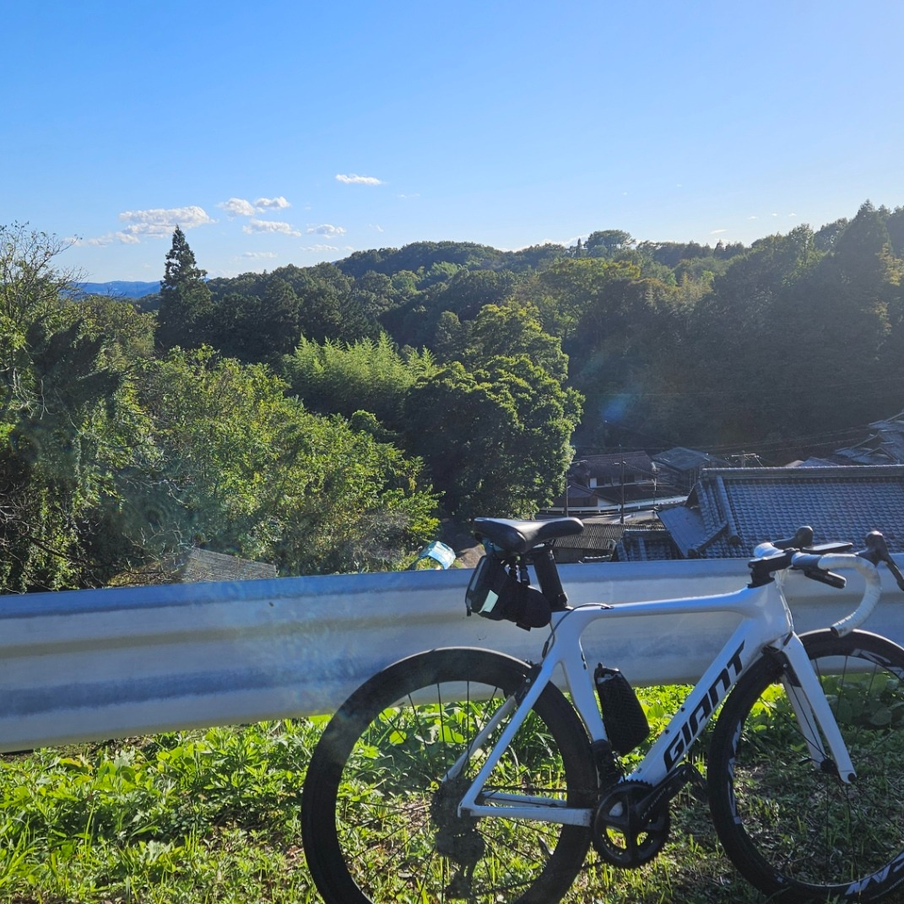
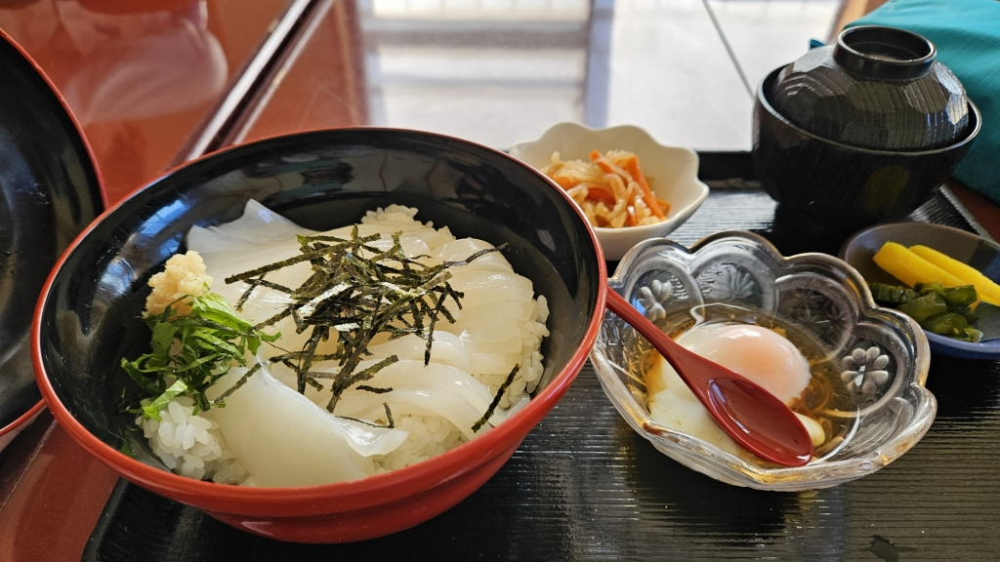

2025秋のセキサイサイクリング実施しました.
11/232025
カテゴリー:チームの紹介
せきサイクリングサークルでは､秋のせきさいサイクリングを実施しました｡ 市内外からサイクリストが中池公園にあつまりサイクリングを実施しました｡ 関市観光課さんの協力もあり､無事サイクリングができたことを感謝しています｡
途中いぶカフェによってたくさんおしゃべりができました｡
せきサイクリング事務局
11/232025
カテゴリー:チームの紹介
せきサイクリングサークルでは､秋のせきさいサイクリングを実施しました｡ 市内外からサイクリストが中池公園にあつまりサイクリングを実施しました｡ 関市観光課さんの協力もあり､無事サイクリングができたことを感謝しています｡
途中いぶカフェによってたくさんおしゃべりができました｡
せきサイクリング事務局
08/152025
カテゴリー:イベント報告
8月に乗鞍サイクリングを実施しました。獲得標高2000mを超えるハードなルートでしたが、チーム一丸となってゴール！高地の美しい景色と達成感を共有できました。
せきサイクリング事務局
07/102025
カテゴリー:イベント報告
7月に琵琶湖一周（ビワイチ）サイクリングを実施し、約150kmの道のりを走破しました。湖畔の景色を楽しみながら、気持ちの良いロングライドとなりました。
せきサイクリング事務局
05/202025
カテゴリー:グルメ＆イベント
5月に福井までサイクリングに行きました。
獲得標高2000mと厳しいルートでしたが、ご褒美のイカ丼は格別！グルメとサイクリングを両立した楽しい一日でした。
福井のわかサイクルロードをみんなで走りました.アップダウンが多いコースでしたが､岐阜の山岳でなれっこでしたね｡
せきサイクリング事務局